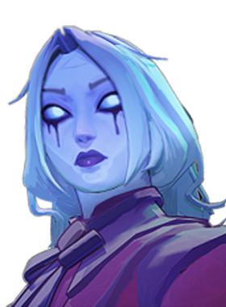
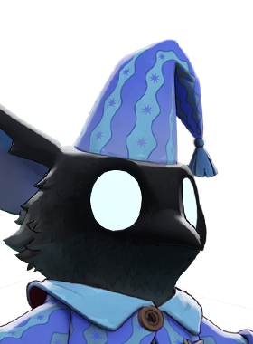
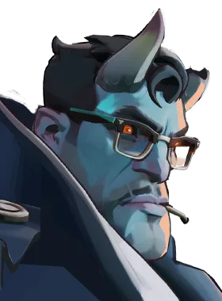

Duelista que cresce conforme acumula acertos.
História
Membro leal da "The Baxter Society", uma ordem internacional de caçadores de monstros, Shiv viaja pela América do Norte em busca de abater criaturas que atacam os vivos.
Embora a sua natureza menos polida e o seu passado criminoso tornem alguns dos membros mais tradicionais da Sociedade cautelosos, ninguém pode negar a sua eficácia.
História oficial do jogo, traduzida automaticamente para o português.
Números reais
Habilidades

Lança uma faca que faz o inimigo sangrar; cada acerto extra acumula e renova o sangramento.

Avança ferindo inimigos pelo caminho e reduzindo a resistência espiritual deles.

Recebe só parte do dano imediatamente e adia o resto ao longo do tempo; pode ser ativada para limpar parte do dano adiado.

Salta contra o primeiro herói inimigo e o executa se estiver abaixo do limite de vida; senão, o fere.
Builds mais usadas
4.957 partidas registradas com esta build.
Tiro Restaurador (800) · Perto (800) · Triturador resistente a balas (1.600) · Colete de Batalha (1.600) · Regeneração Mística (800) · Regeneração Radiante (3.200) · Aura do Caçador (3.200) · Dissipar Magia (3.200) · Healbane (1.600) · Refutação (800)
4.193 partidas registradas com esta build.
Regeneração Extra (800) · Taxa Extra (800) · Regeneração Mística (800) · Frente Fria (1.600) · Regeneração Radiante (3.200) · Healbane (1.600) · Emblema do Encantador (1.600) · Colete de Batalha (1.600) · Decadência (3.200) · Recarga rápida (3.200)
2.912 partidas registradas com esta build.
Rodadas Monstruosas (800) · Regeneração Extra (800) · Taxa Extra (800) · Regeneração Mística (800) · Golpe Espiritual (800) · Regeneração Radiante (3.200) · Healbane (1.600) · Emblema do Encantador (1.600) · Impulsionador de cura (1.600) · Colecionador de Troféus (1.600)
Confrontos reais
 Deadman Danny — 50.7% de vitória
Deadman Danny — 50.7% de vitória Mirage — 50.4% de vitória
Mirage — 50.4% de vitória Sinclair — 49.7% de vitória
Sinclair — 49.7% de vitória Pocket — 49.5% de vitória
Pocket — 49.5% de vitória Viscous — 49.3% de vitória
Viscous — 49.3% de vitória Solomon — 48.7% de vitória
Solomon — 48.7% de vitória
 Graves — 37.1% de vitória
Graves — 37.1% de vitória Paige — 37.6% de vitória
Paige — 37.6% de vitória Seven — 39.3% de vitória
Seven — 39.3% de vitória Haze — 39.6% de vitória
Haze — 39.6% de vitória Rat King — 40.4% de vitória
Rat King — 40.4% de vitória Kelvin — 40.9% de vitória
Kelvin — 40.9% de vitória
O que upar primeiro
Nível por nível, na ordem que os jogadores mais usam em partidas de verdade. A porcentagem mostra quantos escolheram aquela habilidade naquele nível.
Melhores duplas
Heróis que mais ganham jogando junto com ele, em partidas reais (pelo menos 1.500 partidas juntos).
- Rat King54,9%
- Paige51,8%
- Graves51,3%
 Victor50,2%
Victor50,2%- Seven49,5%
- Mirage36,7%
- Deadman Danny38,3%
- Solomon39,0%
Rota (lane)
Na rota, cada lado joga em dupla. Estes números são de confrontos reais: a diferença de almas é medida com o jogo já começado, então almas no verde significa que ele costuma estar na frente.
- Graves — 38,4% de vitória −25 almas (445 partidas)
- Paige — 38,7% de vitória −372 almas (615 partidas)
- Haze — 40,9% de vitória −585 almas (885 partidas)
- Rat King — 42,4% de vitória −149 almas (4.293 partidas)
 Lash — 42,6% de vitória −254 almas (1.191 partidas)
Lash — 42,6% de vitória −254 almas (1.191 partidas)
Vindicta — 42,7% de vitória −247 almas (227 partidas) Baba — 44,0% de vitória +123 almas (1.403 partidas)
Baba — 44,0% de vitória +123 almas (1.403 partidas)- Solomon — 45,9% de vitória +262 almas (525 partidas)

Rem — 52,1% de vitória −588 almas (361 partidas)
Abrams — 51,5% de vitória −346 almas (233 partidas)- Seven — 49,7% de vitória +123 almas (155 partidas)
Histórico de win rate
07/09: 47.0% → 26/10: 46.7% → 14/12: 46.4% → 01/02: 44.1% → 22/03: 45.0% → 10/05: 46.9% → 28/06: 48.1% → 16/08: 47.6% → 04/10: 43.2%